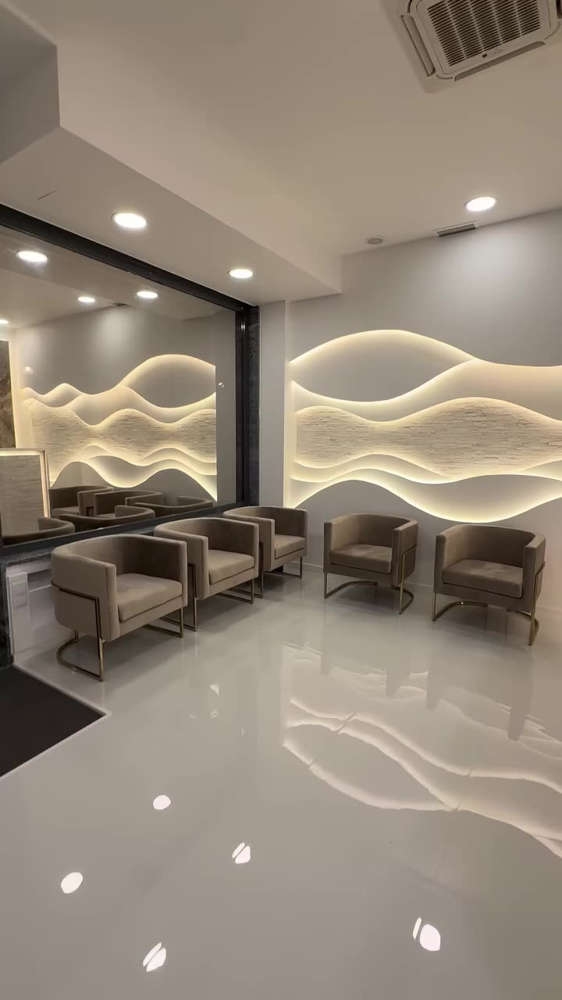
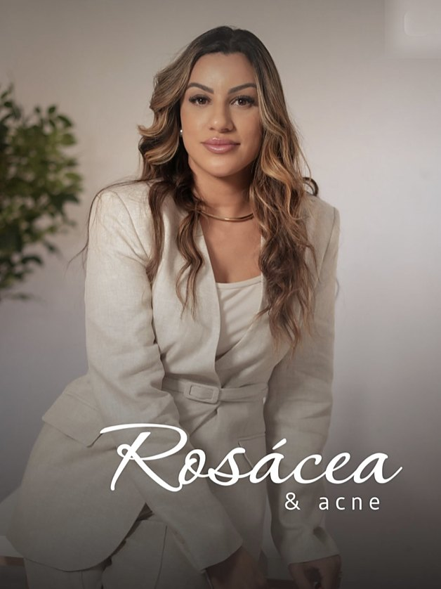
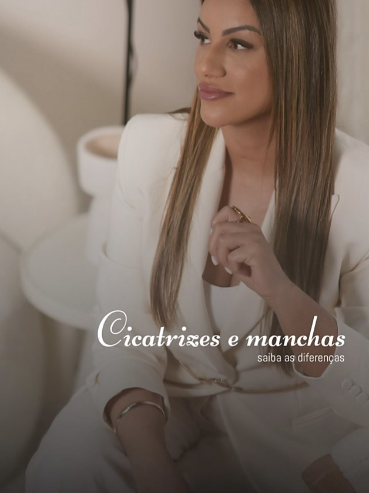
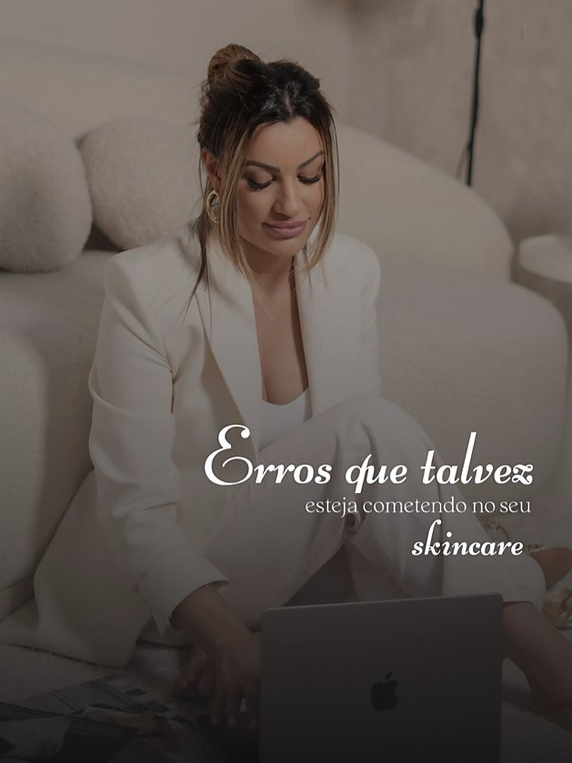
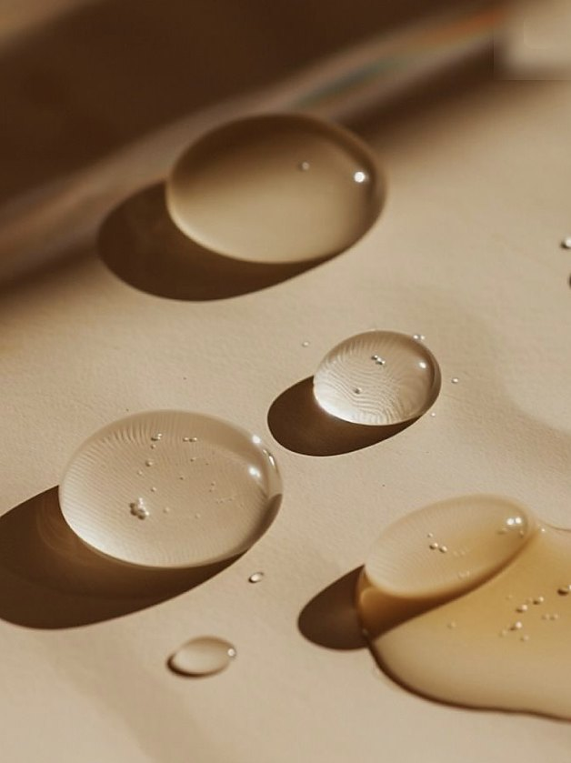
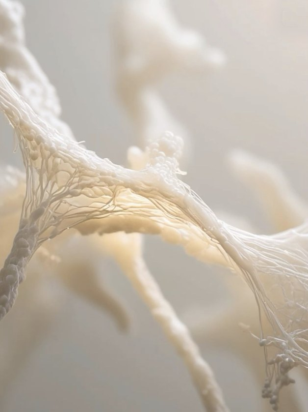
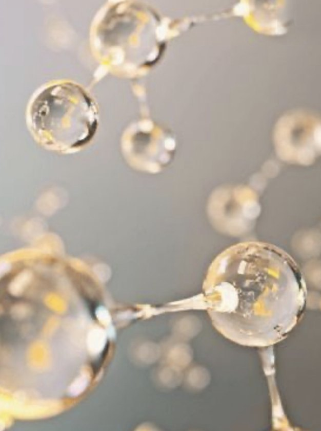
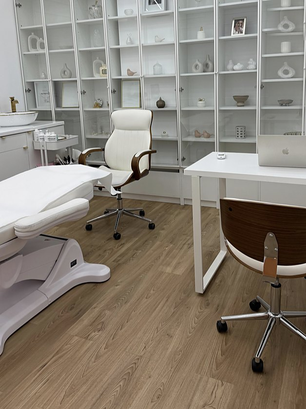
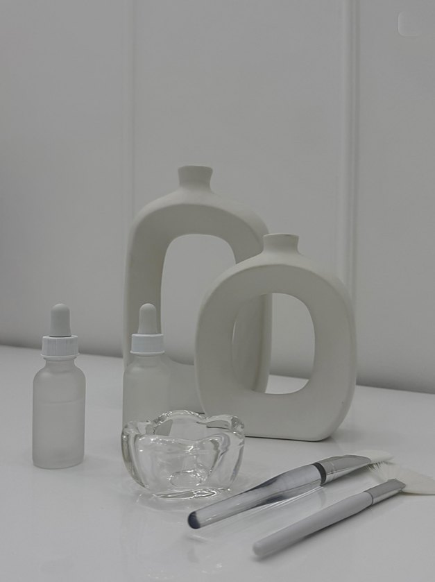
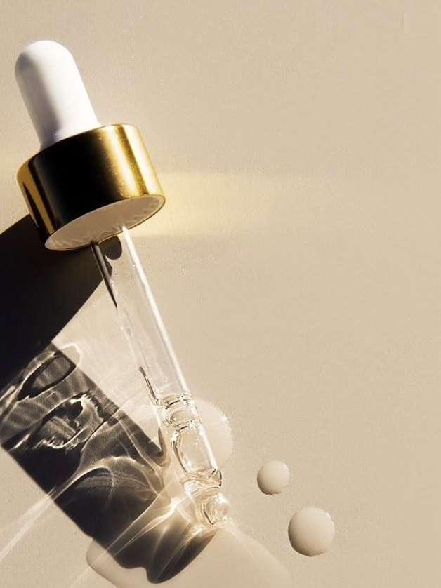

Kátia Arnautcuidado individualizado
Acredito que o cuidado individualizado é a chave para alcançar a verdadeira transformação.
Cada rosto tem o seu contorno. O cuidado também.
Siga a luz: arcos que nunca se repetem, tal como as peles que aqui chegam.

Acredito que o cuidado individualizado é a chave para alcançar a verdadeira transformação.
Aqui, o ponto de partida é sempre a pessoa: a sua pele, a sua rotina, o que a incomoda e o que gostava de ver mudar. Só depois se escolhe o caminho.
Percurso e formação — a confirmar com o cliente
Cada pele, o seu contorno
Alguns dos temas que a Kátia explica nas redes. Escolha um e veja como o ponto de partida muda de pessoa para pessoa.
Texto ilustrativo. A adequação de qualquer cuidado ou tratamento depende sempre da avaliação por um profissional.






Um espaço desenhado à luz
Linhas de luz que ondulam pelas paredes e um corredor de arcos concêntricos. O ambiente foi pensado para a pessoa chegar, respirar e sentir-se em casa.

- Morada
- a confirmar com o cliente
- Horário
- a confirmar com o cliente
- Como chegar
- a confirmar com o cliente
Um caminho à sua medida
Siga a linha de luz. Quatro passos, ao ritmo da sua pele — ilustrativos, para a Kátia afinar consigo.
- 01
Conversa
Ouvir primeiro: o que a incomoda, o que já experimentou, o que espera.

02Avaliação da pele
Olhar com atenção para a pele e para a rotina, sem pressas.

03Plano à medida
Um caminho simples e ajustado a si, explicado passo a passo.
- 04
Acompanhamento
Rever, ajustar e continuar. O cuidado individualizado não acaba na primeira visita.
Descrição ilustrativa do processo — a confirmar com o cliente.
Vamos conversar?
Conte-nos o que a traz. A Kátia responde para combinarmos o melhor momento para a sua primeira avaliação.
- Telefone
- a confirmar com o cliente
- a confirmar com o cliente
- a confirmar com o cliente
- Morada
- Lisboa · a confirmar com o cliente